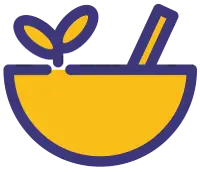

Fira Barcelona – L’Hospitalet acollirà del 12 al 14 de desembre unes jornades dedicades a la cuina tradicional catalana.
La Cuina de la Iaia 2025 neix amb l’objectiu de recuperar els sabors d’abans i reivindicar la saviesa de la cuina casolana com a patrimoni cultural. Durant tres dies, el recinte Fira Barcelona – Gran Via (L’Hospitalet) es transformarà en un espai de trobada per a amants de la gastronomia, cuiners, famílies i curiosos que vulguin reviure la màgia dels fogons tradicionals.
Aquestes jornades inclouran tallers pràctics, xerrades, degustacions i demostracions en directe, tot combinant receptes de tota la vida amb noves tècniques culinàries.
-

Tallers i demostracions
Sessions pràctiques on els participants aprendran a elaborar plats tradicionals com escudella, fricandó o coca de recapte. També hi haurà demostracions de pastisseria catalana, tallers d’aprofitament dels aliments i espais on conèixer productors locals. Un punt de trobada ideal per descobrir tècniques i sabers culinaris d’abans.
-
Xerrades i ponències
Experts, cuiners i divulgadors compartiran reflexions sobre la importància de conservar el llegat culinari català. S’hi abordaran receptaris antics, la transmissió del coneixement gastronòmic i l’adaptació de plats tradicionals a la cuina actual. Ponències breus i accessibles per entendre la història i el valor cultural de la cuina de les nostres àvies.
-
Activitats familiars
Propostes pensades perquè petits i grans gaudeixin de la cuina junts: tallers de receptes senzilles, jocs gastronòmics, espais creatius i contacontes relacionats amb la tradició culinària. Les famílies podran preparar plats plegades, descobrir nous sabors i compartir una experiència divertida que acosta la cuina tradicional als més petits.

Un homenatge a les receptes que han passat de generació en generació
Les jornades posaran especial èmfasi en la importància del llegat culinari. Receptes transmeses oralment, plats originaris de la cuina de mercat i tradicions que connecten territoris i famílies.La cuina de la iaia és cultura viva.
🍴 Cuinar com la iaia no és només seguir una recepta: és cuidar, transmetre i compartir records. 🍴
A més, hi haurà espais dedicats a la sostenibilitat alimentària i a la importància de consumir productes de proximitat, així com propostes innovadores que fusionen tècniques modernes amb sabors tradicionals.

La Cuina de la Iaia 2025 és una invitació a recuperar la memòria gustativa del nostre territori. Un espai on tradició i innovació conviuen per celebrar una gastronomia que no només alimenta, sinó que emociona.